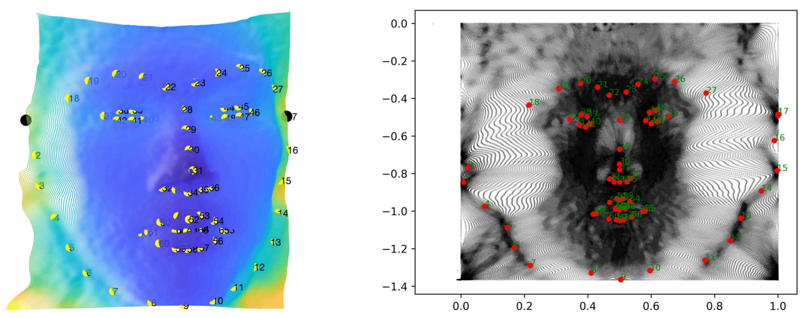

Bio
Hi! I am Hao Wang (王灏 in Chinese), currently a research intern at the Center for Biometrics and Security Research & National Laboratory of Pattern Recognition, Institute of Automation of the Chinese Academy of Sciences. My research interests are in 3D Vision and Graphics.
I have background in signal and image processing, embedded system, machine learning, computer vision, and natural language processing. In 2019, I received my MSc with Distinction in Informatics from The University of Edinburgh, supervised by Prof. Bob Fisher. In 2018, I received my B.Eng. in Telecommunication Engineering from Beijing University of Posts and Telecommunications.
I am also an aspiring musician and photographer.
Updates
November 2019
Receive my MSc with Distinction in Informatics!
October 2019
I will join
Prof. Xiangyu Zhu's group at Center for Biometrics and Security Research, National Laboratory of Pattern Recognition, Institute of Automation of the Chinese Academy of Sciences, and work on 3D face reconstruction.
September 2018
Start my MSc in Informatics at The University of Edinburgh!
June 2018
Receive my B.Eng in Telecommunication Engineering!
September 2014
Start my uni life at Beijing University of Posts and Telecommunications!
Research Highlights

Gender Identification from 3D Facial Surface Model
Dissertation for Master’s degree
Realization of Image Super-Resolution by Implementing Convolutional Neural Network on Sub-pixel
Dissertation for Bachelor’s degree